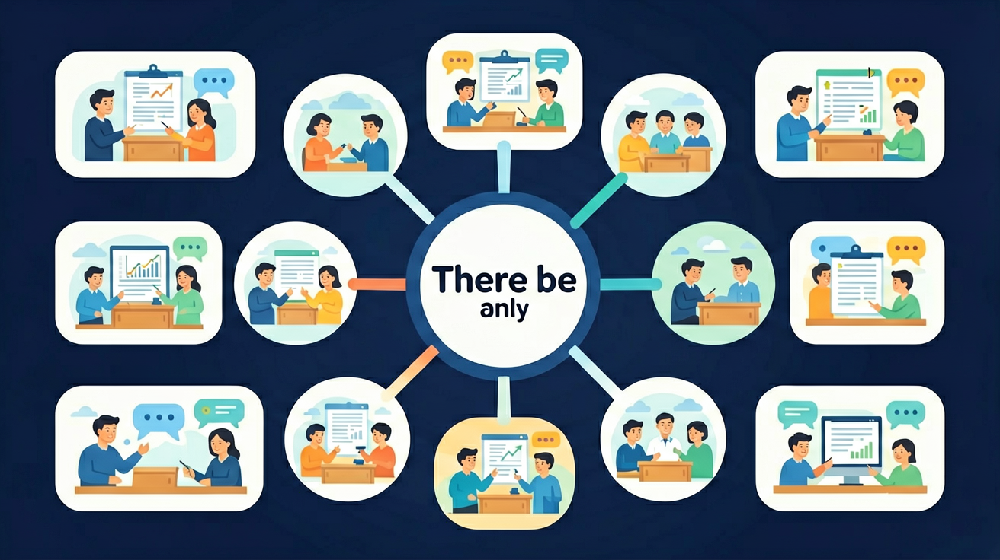

🎯 能说出There be句型的基本结构（There is/are + 名词 + 地点）
🎯 能判断There be句型中is/are的正确使用（单数is/复数are）
🎯 能分析There be句型的否定句和疑问句形式
学完这节课，你将能够：
先试试看，不用紧张！
❓ 为什么There be句型总能把单复数搞错？
❓ There be后面到底跟is还是are？
❓ There be句型能用来提问吗？
学完这一课，这些问题你都能自信地回答。
选择正确句子
There be句型表示什么？
你能用 "This is..." 介绍单个物品：
如果我想描述"房间里有什么东西"呢？比如：
用 "This is..." 就说不通了！我们需要一个新的工具 👇
英语中，当我们想告诉别人"某处有某物"时，我们用：
把 there be 想象成你伸出手指指向远方：
"看！那边有……"
There be 后面跟的名词决定了用 is 还是 are：
| 后面的名词 | be 动词 | 例子 |
|---|---|---|
| 单数（一个） a book, a pen, one cat |
is | There is a book. |
| 不可数（数不清） water, milk, bread |
is | There is some water. |
| 复数（多个） two books, many cats |
are | There are two books. |
Level 1 ⭐ 基础练习
仔细观察下面的教室图片，然后用 There be 来描述它吧！
Level 2 ⭐⭐ 场景应用
根据教室图片，选择正确的词完成句子：
在 be 后面加 not 就可以了！
| 肯定句 | 否定句 | 意思 |
|---|---|---|
| There is a book. | There is not a book. (或 There isn't) |
没有一本书 |
| There are two cats. | There are not two cats. (或 There aren't) |
没有两只猫 |
把 be 动词提前到 there 前面，就变成了问句！
| 陈述句 | 疑问句 | 回答 |
|---|---|---|
| There is a book. | Is there a book? | ✓ Yes, there is. ✗ No, there isn't. |
| There are cats. | Are there any cats? | ✓ Yes, there are. ✗ No, there aren't. |
Level 2 ⭐⭐ 变换句子形式
原句：There is a dog under the tree.
改为否定句：
原句：There are three birds in the sky.
改为一般疑问句：
想象这是你的房间，用 至少 3 个 There be 句子 来介绍它！
请用 There be 写出至少 3 个句子来描述这个房间。可以参考下面的提示：
There be + 某物 + 某处
单数/不可数→is
复数→are
There be + not (+n't)
Be there ... ?
输入一个场景，AI 帮你生成 There be 句子！试试看 👇
And：学生知道简单的主谓宾结构
But：但不会描述‘某处有某物’的客观存在
Therefore：需掌握There be表示存在的核心规则
There be句型用来表示‘某处有某物’，结构是：There is/are + 事物 + 地点。is用于单数，are用于复数。比如：There is a book on the desk（桌上有1本书），There are 3 apples in the basket（篮子里有3个苹果）。注意：be动词的形式由后面紧跟的名词决定！
🌍 看教室角落：There is a broom behind the door（门后有1把扫帚），There are 20 chairs in our classroom（教室里有20把椅子）。
There ___ a pen and two rulers in the box.
And：学生已掌握There be肯定句
But：不知道如何表达‘某处没有某物’
Therefore：需学习There be的否定形式
在There be句型中加not表示否定，单数用isn't，复数用aren't。例如：There isn't a cat under the chair（椅子下没有猫），There aren't any students in the lab（实验室里没有学生）。注意：any用于否定句代替some，比如any books（不是some books）。
🌍 检查书包：There isn't an English book in my bag（我包里没有英语书），There aren't any snacks left（没有零食剩下了）。
There ___ any water in the bottle.
There be句型由There + be动词 + 名词 + 地点构成
表示某处存在某物，强调存在而非拥有
与have/has的区别：There be表存在，have/has表拥有
观察教室物品，用There be句型描述
用There be句型描述自己的房间
There ____ a book and three pens on the desk.
记录教室前/后各区域物品数量
先独立作答，再点选项查看对错与错因。
Which sentence is correct about the living room?
How to say "餐桌上没有纸杯"?
Choose the correct sentence:
____ (有) some milk in the fridge.
答案：There is
milk不可数用is
____ (没有) chairs in the bedroom.
答案：There aren't
复数可数名词用aren't
✅ There is a book on the desk
💡 混淆There be和have的用法
✅ There is a pen in the box
💡 忽视名词单复数
口诀：There be表存在，is单数are复，地点放最后
类比：就像快递员送货：There is a package (is单数) / There are packages (are复数) 在你家门口
检验一下你的学习成果！这些题目和前测类似——看看你进步了多少？
1. 正确描述图片的句子是：
2. 填入正确的词：
There _______ five books on the desk.
3. 把 "There is a cat under the table." 改成否定句：
（中考题）___ a book and two pens on the desk
（迁移题）描述你的书包里有什么，用There be句型
把There are some dogs变成一般疑问句
看看今天学的知识和其他英语知识是怎么连接的！点击节点可以查看详情。
前置：人称代词与 be 动词 · 名词与冠词 后续：介词 · 现在进行时